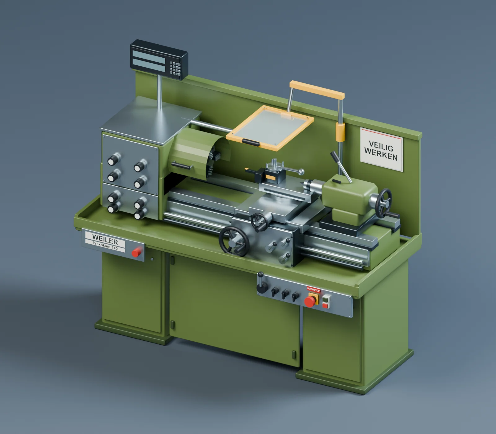

Alleen L + R wijsvingertrigger
Indrukken pakt een werkstuk, sleutel, handwiel of schuifmaat vast; loslaten legt neer. Volledig symmetrisch voor links- en rechtshandige leerlingen.
Eén vergeten klauwplaatsleutel, werkhandschoen of open kap kan in de draaierij direct tot letsel leiden. Op onze WEILER Praktikant 140 digital twin slijpen studenten de veilige volgorde rustig in vóórdat de echte spindel draait.

Los inzetbaar per praktijkles of als zelfstandig eindexamen zonder inhoudelijke voorzeg-hints. Gebruik de tabbladen, knoppen of ← → pijltjestoetsen.

Klik op de 4 veiligheidshotspots (2 triggers bij medestudent + eigen PBM):
Leerlingen raken niet afgeleid door knoppenwirwar of misselijkheid, en ronden de training af met een gestructureerde fysieke controle door de vakdocent.
Indrukken pakt een werkstuk, sleutel, handwiel of schuifmaat vast; loslaten legt neer. Volledig symmetrisch voor links- en rechtshandige leerlingen.
Geen kunstmatige loopbeweging of teleportatie. Na de 3D Buddy Check op Standplaats A volgt één rustige wissel naar Standplaats B vóór de draaibank.
Het A4-rapport op de 13,1-inch tablet koppelt de VR-scores direct aan 5 verplichte fysieke controlepunten op de echte draaibank met S Pen aftekening.
Naast Draaibank VR levert TechBuilds VR de standaardmodule Elektrotechniek VR (E1–E6 · Lockout-Tagout & Duspol). Een extra losse module op dezelfde tablet en brillen kost eenmalig € 5.000,- excl. BTW.
| Richtlijn / Artikel | Eis in de werkplaats | Borging in WEILER VR (v2.2.0) |
|---|---|---|
| Arbocatalogus MBO | Geen handschoenen, geen losse kleding of sieraden, haar vast, veiligheidsbril op. | Harde toegangspoort in Module M1 (AV_COMBO_1..5: 3D Buddy Check & Eigen PBM). |
| Arbobesluit art. 7.5 | Meten, afstellen en spanen verwijderen uitsluitend bij stilstaande spindel. | Meten of reinigen vóór 0 RPM activeert direct een rustige Freeze met toelichting (M5). |
| Arbobesluit art. 7.7 | Draaiende delen zijn afgeschermd; kappen worden niet genegeerd. | Spindelstart is geblokkeerd bij geopende klauwplaatkap of sleutel in drieklauw (M3/M4). |
| Arbobesluit art. 7.14–7.16 | Opzettelijke start, acute noodstop en geen automatische herstart na reset. | Reactietijdmeting in milliseconden bij M6-slingering (1,85 mm) en LOTO-isolatie. |